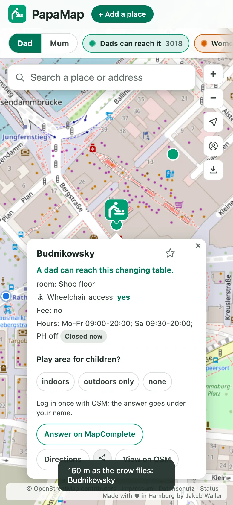

1 Find
The nearest changing table, one tap.
- The button at the bottom centre finds the nearest changing table you can actually reach.
- With the distance as the crow flies, and opening hours where they are known.
- Dad or mum: set once. As a dad, the map colours tables by whether you can get to them; as a mum, every table counts.
